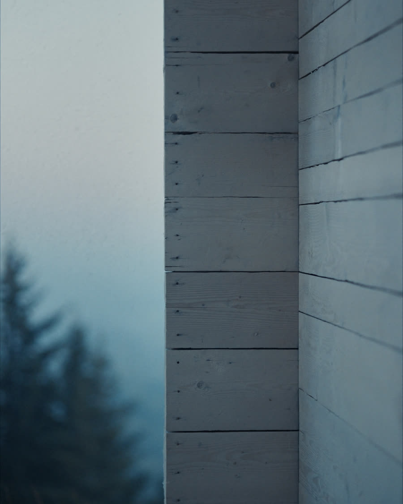
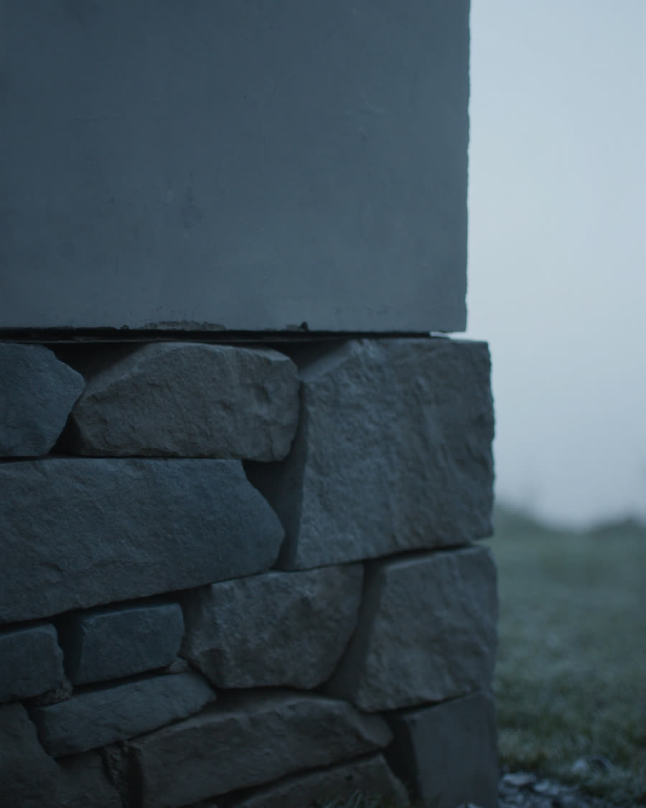

01
Modrzew syberyjski
Elewacja bez impregnatu. Z każdym rokiem siwieje bardziej.
Dom prywatny / Beskidy
Lumen House
Dom w Beskidach, zbudowany wokół jednego okna.
Dom prywatny / Beskidy
Dom w Beskidach, zbudowany wokół jednego okna.
Umów prywatną prezentację01 / Materiał
Beton trzyma chłód do południa. Modrzew oddaje ciepło wieczorem. Szkło przepuszcza jedno i drugie. Dom zaprojektowano w tej kolejności.
02 / Dzień
7:00
Światło wchodzi płasko i sięga tylnej ściany.
13:00
Okap tnie słońce, w środku zostaje chłód.
17:00
Modrzew oddaje ciepło zebrane od rana.
184 m²
powierzchnia użytkowa
2 400 m²
działka, las od północy
38 kWh
na m² rocznie, zapotrzebowanie na ciepło
100%
ogrzewanie pompą ciepła
03 / Liczby
Dom w górach potrafi kosztować 30 000 zł rocznie. Ten został policzony tak, żeby nie kosztował.
04 / Materiały

01
Modrzew syberyjski
Elewacja bez impregnatu. Z każdym rokiem siwieje bardziej.
02
Beton architektoniczny
Ściany nośne zostały ścianami. Nic ich nie zakrywa.

03
Kamień z okolicy
Cokół z tego, co wykopano pod fundament.
05 / Pytania
Droga do domu jest utwardzona i ma 340 metrów. Odśnieża ją gmina do zakrętu, resztę bierze na siebie umowa z sąsiadem z dołu. Kosztuje 1 200 zł za sezon i jest przepisywalna.
Około 14 000 zł rocznie przy stałym mieszkaniu. To mniej niż połowa tego, co mówi się o domu 150 m² w górach, i wynika z jednej rzeczy: z izolacji, nie z oszczędzania na cieple.
Pompą ciepła powietrze-woda i podłogówką. Kominek w salonie jest dla przyjemności, nie z konieczności.
To najczęstsze pytanie i najuczciwsza odpowiedź brzmi: dom jest przygotowany na wynajem. Osobne wejście do części gościnnej, zamek na kod, zdalne sterowanie ogrzewaniem.
06 / Wizyta
Prezentacje umawiamy pod wieczór, bo wtedy dom pokazuje, o co w nim chodzi.